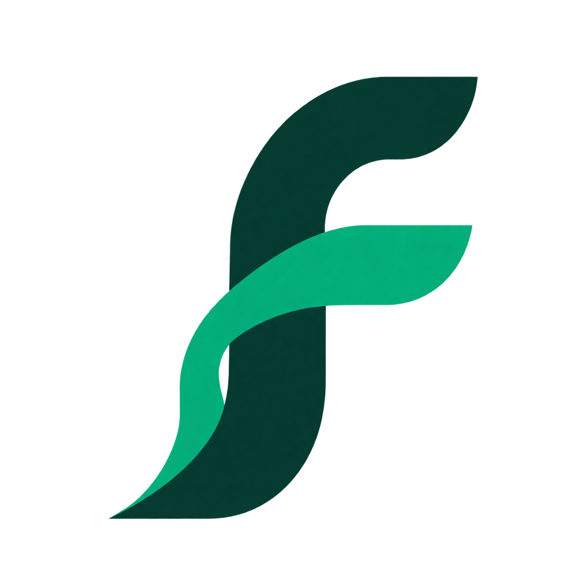
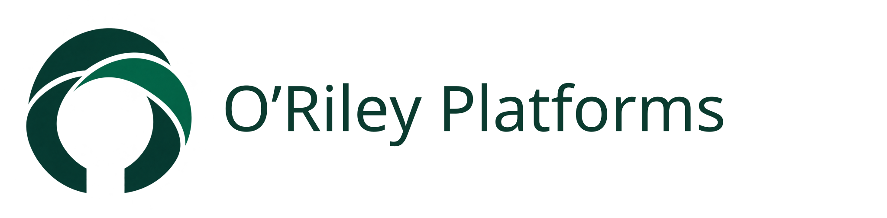

<!doctype html><html lang="en"><meta charset="utf-8"><meta name="viewport" content="width=device-width"><title>Flow and O’Riley logo concepts</title><style>body{font-family:system-ui;background:#e6fbf2;color:#0b3b2f;margin:40px}main{max-width:1100px;margin:auto}.light{background:white;border-radius:20px;margin:16px 0;padding:24px;text-align:center}img{width:300px;max-width:100%;height:auto}.wide{width:100%}article{margin-bottom:56px}</style><main><h1>Flow + O’Riley Platforms</h1><p>Reusable logo concepts · 15 November 2026</p><article><h2>Flow</h2><div class="light"></div><div class="light"></div></article><article><h2>O’Riley Platforms</h2><div class="light"></div><div class="light"></div></article></main></html>